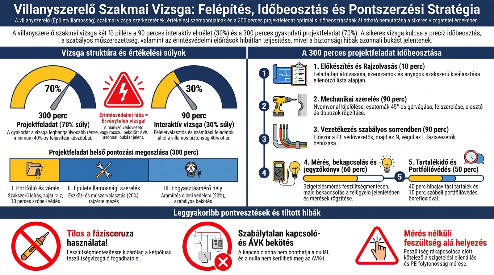
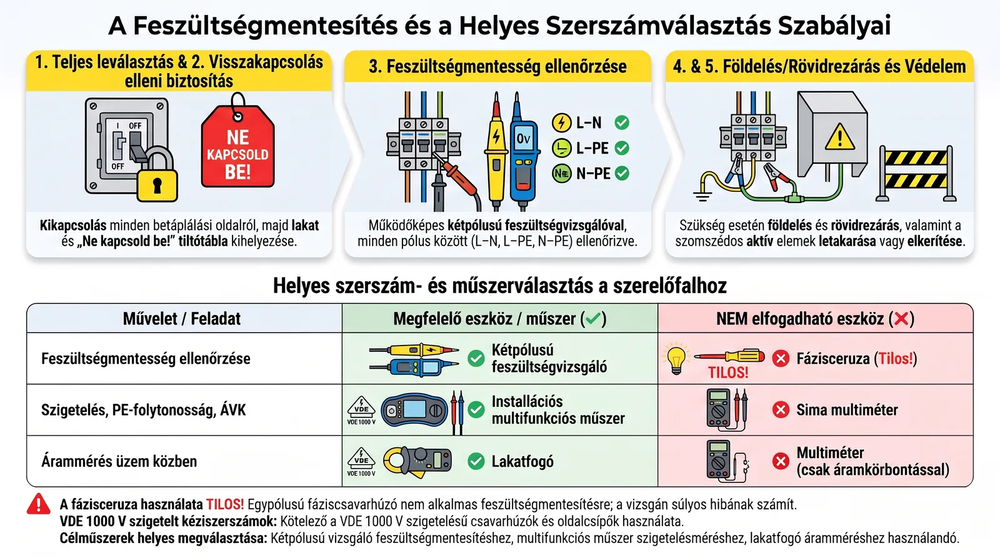
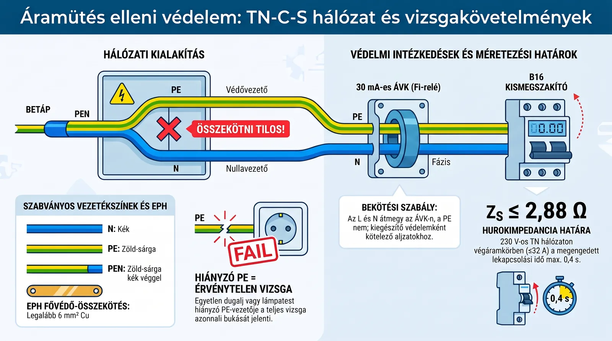
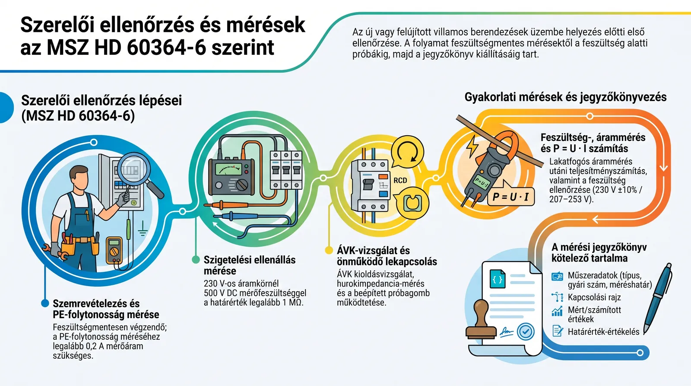
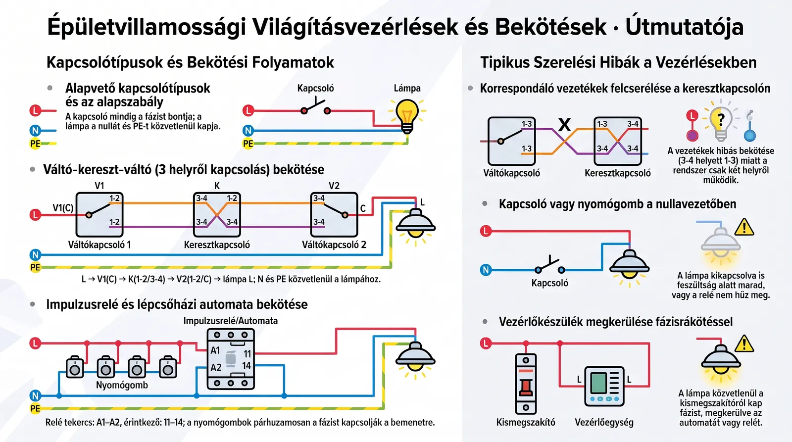
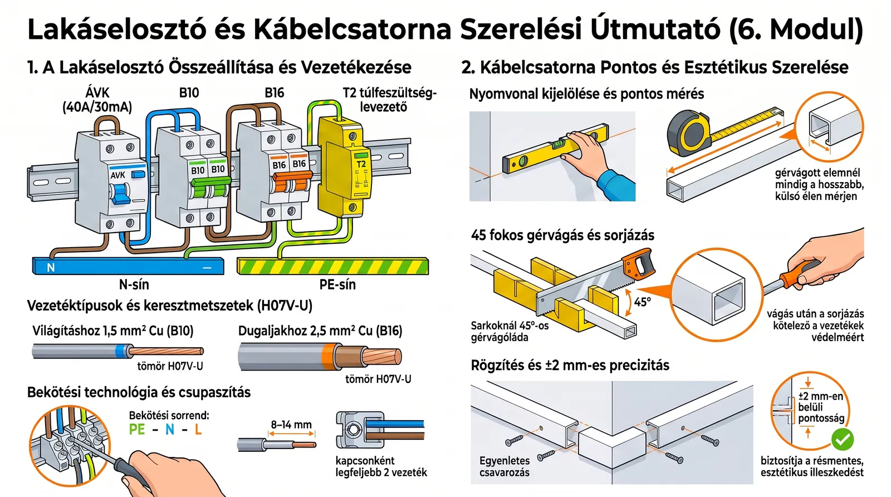
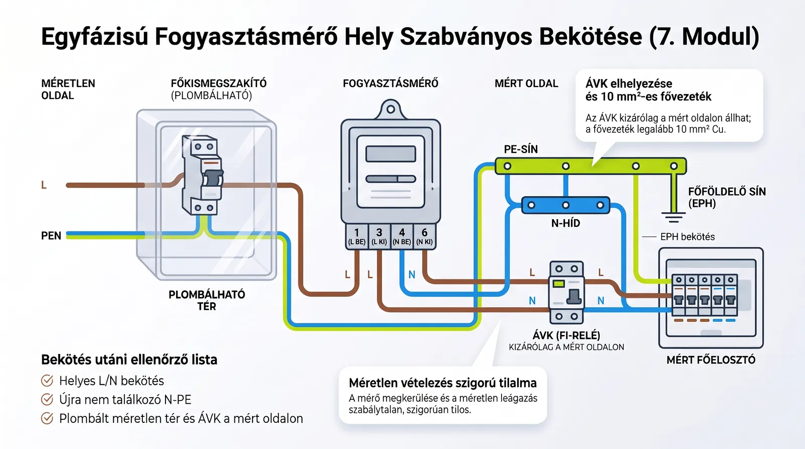
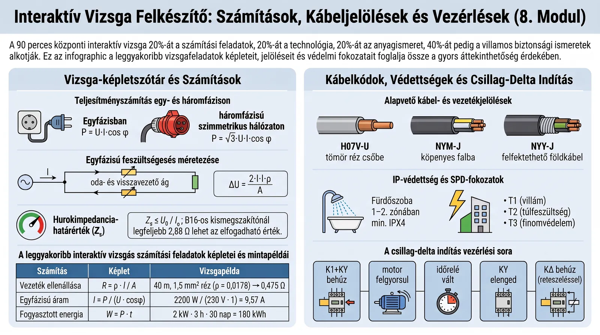
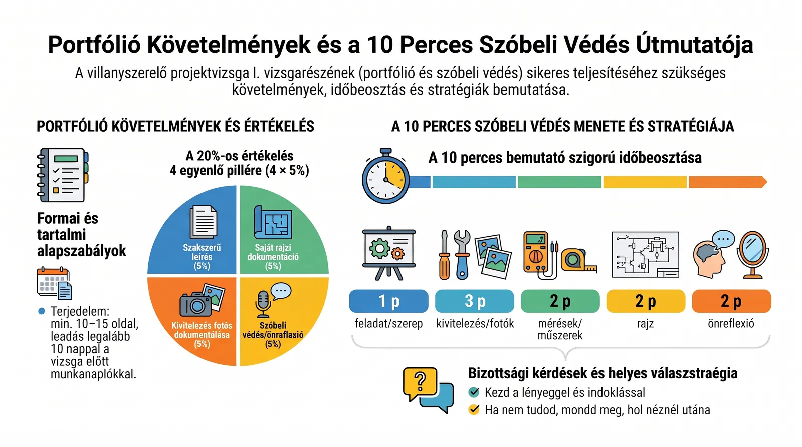

Biztos átmenő, erős közepes: a vizsga minden részére.
Interaktív vizsga (anyag, technológia, számítás, biztonság), gyakorlati szerelés, mérőhely és portfólióvédés – a pontok zömét adó mag, alaposan, számolási és rajzolási gyakorlással.
Áttekintés
A vizsga két része: projektfeladat (70%) – portfólió 20, épületvillamossági szerelés 40, fogyasztásmérő hely 40 – és központi interaktív vizsga (30%). Mindkettőn külön 40% kell. Az áramütés elleni védelem hibája érvénytelen vizsgát jelent, ezért a terv a biztonsággal kezd. Minden modulhoz tartozik egy rövid hanglecke és egy ábra; a gyakorló módban ellenőrző kérdések és tanulókártyák is megjelennek. A notebookban (NotebookLM) bármire rákérdezhetsz, és ott van a kvíz, a tanulókártyák és a gondolattérkép is.
Tanulási terv
Ha csak egy napod van, az 1. nap a gyakorlati vizsgát és a biztonságot (a pontok több mint felét) fedi le. A gyakorló feladatok a szimulátor Gyakorlótermében vannak: végtelen számolás lépésenkénti megoldással, áramútrajzok, motorvezérlés-rajzkiegészítés, rajzjelek, portfólióvédés.
1. nap – gyakorlati vizsga, biztonság, mérések
- 08:0050 pA vizsga felépítése és a pontszerzés Kezdd a nagy képpel: mi ér pontot, mi tesz érvénytelenné.
- 08:5060 pÁramütés elleni védelem A legtöbb pont és az érvénytelenség kockázata itt van.
- 09:5045 pMunkavédelem és szerszámok 5 szabály + szerszámválasztás (a projekt 20%-a).
- 10:3515 p— Szünet – mozogj, igyál vizet.
- 10:5060 pSzerelői ellenőrzés és mérések Mérések és jegyzőkönyv; utána a szimulátor Ellenőrzés szakasza.
- 11:5075 pVilágításvezérlések Bekötések; a szimulátor 1–4. feladata gyakorló módban.
- 13:0545 p— Ebéd.
- 13:5060 pElosztó, csatorna, kivitelezés Elosztó és csatorna; a nyári konyha vizsga módban, megoldás nélkül.
- 14:5060 pFogyasztásmérő hely Mérőhely (III. rész, 40%); a szimulátor 5. feladata.
- 15:5015 p— Szünet.
- 16:0560 pInteraktív vizsga: számítás, anyag Számítások; utána egy teljes 90 perces interaktív vizsga vizsga módban.
- 17:0530 pPortfólió és szóbeli védés Portfólióvédés; 10 perc a Hot Seat vizsgabizottsága előtt.
- este30 p— Ismétlés: tanulókártyák és kvíz a NotebookLM-ben, a hibás kérdéseid újra.
2. nap – interaktív vizsga témái, számolás, rajz, próbavizsga
- 08:0060 pVillamos alapismeretek és alapszámítások Alapszámítások; utána Gyakorlóterem → Számolás, vegyes.
- 09:0060 pVezetékméretezés és túláramvédelem Ib ≤ In ≤ Iz és feszültségesés; Számolás → keresztmetszet, feszültségesés.
- 10:0015 p— Szünet.
- 10:1575 pMotorok és motorvezérlés Motorok; Gyakorlóterem → Motorvezérlés mindhárom feladata.
- 11:3045 pKábelek, szerelési módok, különleges helyek Kábeljelölések, fürdőszoba, IP, építési terület.
- 12:1545 p— Ebéd.
- 13:0045 pTúlfeszültség-védelem, PV, transzformátor Túlfeszültség, PV, transzformátor, mérőváltók.
- 13:4545 pDokumentáció, anyagjegyzék, hibakeresés Dokumentáció, anyagjegyzék, hibakeresés.
- 14:3060 p— Számolási feladatgyűjtemény: 33 feladat, előbb önállóan, utána a megoldás.
- 15:3090 p— Próbavizsga: interaktív vizsga vizsga módban, utána egy gyakorlati feladat megoldás nélkül.
- este30 p— Gyakorlóterem → Áramútrajz és Rajzjelek; a portfólióvédés 10 perce hangosan.
Modulok
A vizsga felépítése és a pontszerzés
Projekt 70% (portfólió 20 + szerelés 40 + mérőhely 40), interaktív 30%; mindkettőn külön 40% kell.

A biztonsági hiba mindent visz
Az áramütés elleni védelem kialakításában elkövetett hiba érvénytelen vizsgát jelent, akármilyen szép a munka. Ezért a vezetékezést a védővezetőkkel kezded, és bekapcsolás előtt szemrevételezel: van-e PE minden lámpatesten és dugaljon, minden áramkör átmegy-e az ÁVK-n, a kapcsoló a fázist bontja-e.
A szimulátorban: A szimulátorban vizsga módban kötsz be, és az értékelés „ÉRVÉNYTELEN” jelzése megmutatja, ha ilyen hibát hagytál.
Megelőzött hiba: Egy elfelejtett PE miatti érvénytelen vizsga.
KKK 2024.08.29 v4, 8.13 – projektfeladat értékelése
A szerszám- és műszerválasztás 20%
A II. vizsgarész legnagyobb tétele nem a bekötés, hanem az eszközök és mérőeszközök kiválasztása és helyes használata. A bizottság figyeli, mivel vágsz, mivel ellenőrzöd a feszültségmentességet, és melyik műszerrel mérsz.
A szimulátorban: A szimulátor Anyag + szerszám szakaszában csak azt vidd, ami kell; a rossz szerszám használata pontlevonás.
Megelőzött hiba: Fázisceruza, nem szigetelt csavarhúzó, flex a csatornához.
KKK 2024.08.29 v4, 8.13 – II. vizsgarész
Ellenőrző kérdések
Mekkora súlya van a projektfeladatnak és az interaktív vizsgának?
70% és 30%; mindkettőn külön legalább 40% kell.
Mi tesz érvénytelenné egy egyébként jó munkát?
Az áramütés elleni védelem hibája (pl. hiányzó PE, ÁVK megkerülése).
Hány százaléktól jeles a szakmai vizsga?
80%-tól (60–79% jó, 50–59% közepes, 40–49% elégséges).
Tanulókártyák
Munkavédelem és szerszámok
Az öt szabály sorrendben, kétpólusú vizsgálóval; VDE szerszám, finomfogú fűrész gérvágóládával.

Az öt szabály sorrendje
Leválasztás minden betáplálásról, visszakapcsolás elleni biztosítás, feszültségmentesség ellenőrzése, földelés és rövidrezárás (ahol szükséges), a szomszédos feszültség alatti részek letakarása. A sorrend a lényeg: csak biztosított, leválasztott részen ellenőrzöl, és csak ellenőrzött részen dolgozol.
A szimulátorban: Az Ellenőrzés szakasz első feladata a sorrend kirakása.
Megelőzött hiba: Feszültség alatti munka – a vizsgán azonnali súlyos hiba.
MSZ 1585 – Villamos berendezések üzemeltetése
Kétpólusú vizsgáló, nem fázisceruza
A fázisceruza csak jelez, nem mér két pont között, és hamisan mutathat feszültségmentességet. A kétpólusú vizsgálóval L–N, L–PE és N–PE között mérsz, előtte és utána ismert feszültségen kipróbálod.
A szimulátorban: A szimulátorban a fázisceruzás ellenőrzés kritikus hibaként kerül az értékelésbe.
Megelőzött hiba: Megrázás „feszültségmentesnek hitt” vezetéktől.
MSZ 1585; MSZ EN 61243-3
Ellenőrző kérdések
Sorold fel az öt szabályt!
Leválasztás, visszakapcsolás elleni biztosítás, feszültségmentesség ellenőrzése, földelés-rövidrezárás, szomszédos részek letakarása.
Mivel vágod a PVC csatornát 45°-ban?
Finomfogú fűrésszel gérvágóládában, utána sorjázod.
Mivel méred az áramot az áramkör megbontása nélkül?
Lakatfogóval.
Tanulókártyák
Áramütés elleni védelem
PE mindenhová, 30 mA-es ÁVK, Zs ≤ U0/Ia, TN-C-S szétválasztás után N és PE soha többé nem találkozik.

Önműködő lekapcsolás + ÁVK
Testzárlatkor a kismegszakító akkor old ki gyorsan, ha a hurokimpedancia elég kicsi: Zs ≤ U0/Ia (B16: 230/80 = 2,88 Ω). Ezt egészíti ki a 30 mA-es ÁVK, amely a fázis és a nulla közti áramkülönbségre old ki. Az ÁVK-n az L és az N is átmegy, a PE soha.
A szimulátorban: A szimulátorban ha a nulla megkerüli az ÁVK-t, bekapcsoláskor az ÁVK tényleg kiold.
Megelőzött hiba: Áramütés hibás készüléknél; „ok nélkül” kioldó ÁVK.
MSZ HD 60364-4-41:2017, 411
PEN-szétválasztás egyszer és végleg
TN-C-S-nél a PEN-t a főföldelő sínre kötöd, onnan indul külön a PE és az N. Ha utána bárhol újra összekötöd őket, a fogyasztói áram egy része a védővezetőn folyik, az ÁVK kiold, és a PE-n feszültség jelenhet meg.
A szimulátorban: A szimulátor mérőhely-feladatában az N–PE újraösszekötés kritikus hiba.
Megelőzött hiba: Feszültség a burkolatokon, kioldó ÁVK.
MSZ HD 60364-5-54, 543.4
Ellenőrző kérdések
Mekkora lehet a Zs egy B16-os körben?
Legfeljebb 230/(5·16) = 2,88 Ω.
Mely áramkörökben kötelező a 30 mA-es ÁVK?
≤32 A-es dugaljkörök, szabadtéri hordozható készülékek, lakásban a világítási végáramkörök is.
Mire használható a zöld-sárga vezeték?
Csak PE-re, illetve PEN-re (a végein kék jelöléssel).
Tanulókártyák
Szerelői ellenőrzés és mérések
Szemrevételezés → PE-folytonosság → szigetelés (500 V DC, ≥1 MΩ) → lekapcsolás → ÁVK → funkciópróba; jegyzőkönyv.

Mérni csak feszültségmentesen – a szigetelést
A szigetelésmérő 500 V egyenfeszültséget kapcsol a vezetékekre; feszültség alatt tönkreteheti a műszert és a készülékeket, és hamis eredményt ad. Előtte a PE-folytonosságot méred, hogy legyen mihez mérni.
A szimulátorban: A szimulátor letiltja a feszültség alatti szigetelésmérést, és hibaként rögzíti.
Megelőzött hiba: Tönkrement műszer, hamis „megfelel”.
MSZ HD 60364-6:2017, 6.4.3
A jegyzőkönyv a mérés része
A mérés csak akkor ér pontot, ha dokumentálod: mit mértél, milyen műszerrel (típus, gyári szám, méréshatár), milyen kapcsolásban, mi lett az eredmény és megfelel-e. P = U·I-t a mért értékekből számolod, a feszültséget a 230 V ±10%-hoz hasonlítod.
A szimulátorban: A szimulátor jegyzőkönyve a mért értékeidből ellenőrzi a P-t és a tűrés-értékelést.
Megelőzött hiba: Jó mérés, mégis pontvesztés hiányos jegyzőkönyv miatt.
Nagykunsági FVK 2026-os mintafeladat, mérési jegyzőkönyv
Ellenőrző kérdések
Szigetelésmérés 230 V-os körben: mérőfeszültség és határérték?
500 V DC, ≥ 1 MΩ.
Mi a hálózati tűréshatár?
230 V ± 10% → 207–253 V.
U = 229,4 V, I = 0,262 A, izzó. P = ?
≈ 60,1 W.
Tanulókártyák
Világításvezérlések
101, 105, 106, 107; váltó–kereszt–váltó; impulzusrelé A1–A2 / 11–14; lépcsőházi automata.

A kapcsoló a fázist bontja
Ha a nullát kapcsolod, a lámpa kikapcsolva is feszültség alatt marad – izzócserénél megráz. Ezért a kapcsoló mindig a fázisban van, a lámpa N-t és PE-t közvetlenül kap.
A szimulátorban: A szimulátor minden kapcsolóállásban ellenőrzi, maradt-e fázis a kikapcsolt lámpán.
Megelőzött hiba: Áramütés izzócserénél.
MSZ HD 60364-4-46; szakmai gyakorlat
Váltó–kereszt–váltó
L a V1 közösére, a két korrespondáló V1-ről a kereszt 1–2-re, a kereszt 3–4-ről V2 1–2-re, V2 közöse a lámpára. A keresztkapcsoló a két korrespondálót cseréli fel, így bármelyik kapcsoló váltása átbillenti a lámpát.
A szimulátorban: A Rajzolvasás szakasz áramútrajz-feladata pontosan ezt kéri.
Megelőzött hiba: Csak két helyről működő lámpa.
Épületvillamossági kapcsolások – szakmai tananyag
Ellenőrző kérdések
Hány ér fut a váltó és a kereszt között?
4 (a mintarajz szerint).
Impulzusrelé: hova kötöd a nyomógombokat?
Párhuzamosan, L-ről az A1-re; A2 → N.
Csillárkapcsoló hány lámpakört kapcsol?
Kettőt, külön és együtt.
Tanulókártyák
Elosztó, csatorna, kivitelezés
ÁVK 40/30 mA, B10 világítás, B16 dugalj, SPD; 1,5 / 2,5 mm²; mérés, gér, sorja, vízszint.

Keresztmetszet és védelem együtt
A kismegszakító a vezetéket védi: 1,5 mm²-hez B10, 2,5 mm²-hez B16 a szokásos párosítás. Nagyobb kismegszakító (pl. C32) vékony vezetéken nem véd túlterhelés ellen.
A szimulátorban: A szimulátor a dugaljkör 1,5 mm²-es vezetékét hibának jelzi.
Megelőzött hiba: Melegedő, öregedő vezeték.
MSZ HD 60364-4-43; MSZ HD 60364-5-52
Mérj, ne becsülj
A gérvágott darab hosszát a hosszabb, külső élen méred, gérvágóládában vágod, sorjázod, és a fő szakaszt vízmértékkel állítod. ±2 mm pontosság már szép munka.
A szimulátorban: A Kábelcsatorna szakaszban mérőszalaggal mérsz a 3D lapon.
Megelőzött hiba: Rések a sarkokban, ferde csatorna – esztétikai pontvesztés.
Szakmai gyakorlat
Ellenőrző kérdések
Melyik kismegszakító a 2,5 mm²-es dugaljkörhöz?
B16.
Hány vezeték mehet egy csavaros kapocsba?
Legfeljebb kettő (sínkapocsba egy).
Mennyi a jó csupaszolási hossz?
Tipikusan 8–14 mm, a kapocs szerint.
Tanulókártyák
Fogyasztásmérő hely
B32 a mérő előtt; 1→3 L, 4→6 N; PEN a PE-sínre; EPH; 10 mm²; ÁVK csak mért oldalon.

A mérő előtt, a fázisban: plombálható főkismegszakító
A méretlen oldalon a túláramvédelem a mérőt és a fővezetéket védi, ezért a mérő ELŐTT van, a plombálható térben. A mérőn a fázis 1-en be és 3-on ki, a nulla 4-en be és 6-on ki; fordított bekötés hiba, megkerülés szabálytalan vételezés.
A szimulátorban: A szimulátor 5. feladata felismeri a fordított mérőt és a méretlen vételezést.
Megelőzött hiba: Szabálytalan vételezés, rossz mérés.
MS-09-12-v09 (2024) mérőszekrény-specifikáció; E.ON mérőhelyi ellenőrző lista
ÁVK csak a mért, szétválasztott oldalon
A PEN-t nem bonthatja semmi, és a szétválasztás előtt a fázis–nulla különbség nem értelmezhető védelemként. Ezért az ÁVK a lakás főelosztójába kerül, a mérő után.
A szimulátorban: A szimulátorban ÁVK a mérőszekrényben = kritikus hiba.
Megelőzött hiba: Védelem nélküli lakás, kioldó vagy hatástalan ÁVK.
MSZ HD 60364-4-41; E.ON földelési útmutató 2022
Ellenőrző kérdések
Mi a mérő 1, 3, 4, 6 kapcsa?
1 L be, 3 L ki, 4 N be, 6 N ki.
Hova kötöd a beérkező PEN-t?
A földelt PE- (főföldelő) sínre, onnan híd az N-re.
Mekkora a fővezeték keresztmetszete 32 A-ig?
10 mm² Cu.
Tanulókártyák
Interaktív vizsga: számítás, anyag
P = U·I·cos φ; ΔU = 2·I·l·ρ/A; R = ρ·l/A; P3 = √3·U·I·cos φ; Zs ≤ U0/Ia; kábeljelölések, IP.

Az oda-vissza út
Egyfázisú áramkörben az áram a fázison oda és a nullán vissza folyik, ezért a feszültségesés képletében 2-es szorzó van: ΔU = 2·I·l·ρ/A. A vizsga rossz válaszai között szinte mindig ott a 2-es nélküli eredmény.
A szimulátorban: A szimulátor generált számolós feladatai pont ezeket a csapdákat kínálják rossz válaszként.
Megelőzött hiba: Fele akkora feszültségesés, rossz keresztmetszet-választás.
Villamos alapismeretek – vezetékméretezés
Mértékegység és √3
Háromfázisban a vonali feszültséggel (400 V) és √3-mal számolsz; egyfázisban 230 V-tal. W, kW, Ω, mΩ – a válaszok gyakran csak ebben térnek el.
A szimulátorban: Interaktív vizsga gyakorló módban az Ellenőrzés gomb a levezetést is mutatja.
Megelőzött hiba: Elszámolt nagyságrend.
Villamos alapismeretek
Ellenőrző kérdések
16 A, 25 m, 2,5 mm² Cu, egyfázis: ΔU?
2·16·25·0,0178/2,5 = 5,70 V (2,48%).
400 V, 16 A, cos φ 0,85: P?
1,732·400·16·0,85 ≈ 9,42 kW.
Mit jelent az A a NAYY-ban?
Alumínium vezető.
Tanulókártyák
Portfólió és szóbeli védés
10 perc: mi volt, hogyan csináltad, mit mértél, saját rajz, önreflexió.

Válasz előbb, indoklás utána
A bizottság rövid, pontos válaszokat vár: először a lényeg („B16, mert a 2,5 mm²-t ez védi”), aztán az indoklás és a szabvány. Ha nem tudod, mondd ki, és mondd el, hol néznél utána.
A szimulátorban: A Hot Seat portfólióvédésben a vizsgabizottság pont így kérdez.
Megelőzött hiba: Hosszú, elkalandozó válasz, ami alatt elfogy az idő.
KKK 2024.08.29 v4, I. vizsgarész
Saját rajz, saját munka
A portfólió értékelési eleme a saját rajzi dokumentáció és a kivitelezési fázisok dokumentálása. Mutass fotókat a fázisokról, és tudd megmagyarázni a rajzod minden jelét.
A szimulátorban: A szimulátor rajzolvasási feladatai a jelek és érszámok magyarázatát gyakoroltatják.
Megelőzött hiba: „Ezt Ön rajzolta?” – és nincs válasz.
KKK 2024.08.29 v4, I. vizsgarész
Ellenőrző kérdések
Hány perc a portfólióvédés?
10 perc, a 300 percen belül.
Mi a négy értékelési elem?
Szöveges leírás, saját rajz, kivitelezési fázisok dokumentálása, szóbeli védés és önreflexió.
Mikor kell leadni a portfóliót?
Legalább 10 nappal a vizsga előtt.
Tanulókártyák
Villamos alapismeretek és alapszámítások
Ohm-törvény, P = U·I, W = P·t, R = ρ·l/A, S/P/Q háromszög és háromfázisban P = √3·U·I·cos φ.
A hanglecke a NotebookLM-ben (Stúdió) érhető el.
Mértékegység előbb, képlet utána
A számolási feladatok többsége az Ohm-törvényre, a P = U·I-re és a W = P·t-re épül. A hibák nagy része nem a képletből, hanem az átváltásból jön: a kW-ot W-ra, a percet és a másodpercet órára kell váltani, mielőtt behelyettesítesz. A vezeték ellenállását R = ρ·l/A adja, egyfázisú körben oda-vissza úttal (2·l). A végén mindig nézd meg, reális-e az eredmény: a párhuzamos eredő nem lehet nagyobb a legkisebb ágnál.
A szimulátorban: Az interaktív vizsga generált számolási feladatainál írd fel külön sorba az adatokat egységgel, és csak utána számolj; a hibás válasznál nézd meg, melyik átváltás maradt ki.
Megelőzött hiba: 1000-szeres eltérés a W–kW vagy a perc–óra keverése miatt.
Villamos alapismeretek
Teljesítményháromszög és háromfázis
Váltakozó áramon a látszólagos teljesítmény S = U·I (VA), ebből a hatásos P = S·cos φ (W), a meddő Q = S·sin φ (var), és S² = P² + Q². Háromfázisban a vonali értékekkel P = √3·U·I·cos φ, a vonali feszültség a fázisfeszültség √3-szorosa, deltában a vonali áram a fázisáram √3-szorosa. A fázisjavító kondenzátor a meddőt helyben adja, így az áram csökken, a hatásos teljesítmény nem változik.
A szimulátorban: Oldd meg a gyakorló háromfázisú teljesítmény-feladatokat úgy, hogy előbb S-t számolod, utána P-t és Q-t; ellenőrizd, hogy S² = P² + Q² kijön-e.
Megelőzött hiba: A √3 kihagyása, vagy Q = S − P számolása.
Villamos alapismeretek – váltakozó áramú hálózatok
Ellenőrző kérdések
Mekkora az árama egy 230 V-os, 2000 W-os vízforralónak?
I = 2000/230 ≈ 8,70 A.
Mi a meddő teljesítmény mértékegysége?
var (voltamper reaktív).
Mekkora P, ha 400 V, 20 A, cos φ = 0,85 háromfázisban?
P = 1,732·400·20·0,85 ≈ 11,8 kW.
Tanulókártyák
Vezetékméretezés és túláramvédelem
Ib ≤ In ≤ Iz, B/C/D karakterisztika, gG/aM, szelektivitás, feszültségesés és PE-keresztmetszet.
A hanglecke a NotebookLM-ben (Stúdió) érhető el.
A védelem a vezetéket védi
A kismegszakító névleges árama legyen legalább az üzemi áram, de legfeljebb a vezeték terhelhetősége: Ib ≤ In ≤ Iz. A terhelhetőség a szerelési módtól, a környezeti hőmérséklettől és a csoportosítástól függ, ezért a csökkentő tényezőkkel együtt kell nézni. A karakterisztika (B, C, D) a zárlati kioldás küszöbét adja meg, és ettől függ a megengedett hurokimpedancia is. Lakásban a szokásos pár 1,5 mm² – B10 és 2,5 mm² – B16.
A szimulátorban: Az elosztó összeállításánál minden áramkörhöz írd fel az Ib–In–Iz hármast, mielőtt kiválasztod a kismegszakítót; a generált méretezési feladatoknál ugyanígy haladj.
Megelőzött hiba: C32 kismegszakító 2,5 mm²-es dugaljkörön, amely túlterhelésnél nem védi a vezetéket.
MSZ HD 60364-4-43; MSZ HD 60364-5-52
Feszültségesés és felfelé kerekítés
Egyfázisban ΔU = 2·I·l·ρ/A, háromfázisú szimmetrikus terhelésnél ΔU = √3·I·l·ρ·cos φ/A (a reaktanciát elhanyagolva). A megengedett esésből visszaszámolt keresztmetszetet mindig a következő szabványos méretre kerekítjük felfelé. A végleges keresztmetszet a terhelhetőségből, a feszültségesésből és az érintésvédelemből kiadódó legnagyobb érték. A PE keresztmetszete 16 mm²-ig a fázisvezetővel azonos.
A szimulátorban: A generált feszültségesés-feladatoknál előbb döntsd el, egy- vagy háromfázisú-e a kör, és csak utána válaszd a képletet.
Megelőzött hiba: 3,1 mm²-es számított értékre 2,5 mm² választása, vagy a 2-es szorzó elhagyása.
MSZ HD 60364-5-52 (feszültségesés); MSZ HD 60364-5-54
Ellenőrző kérdések
Mikor old ki biztosan azonnal egy B16-os kismegszakító?
5·In = 80 A felett (a mágneses tartomány felső határa).
Mekkora PE kell 25 mm²-es fázisvezetőhöz?
16 mm² (16 < S ≤ 35 mm² között).
Mire való az aM betét?
Csak zárlatvédelemre, motorágban, a túlterhelés ellen hőrelé véd.
Tanulókártyák
Motorok és motorvezérlés
n0 = 60·f/p, szlip, adattábla, I = P2/(√3·U·cos φ·η), öntartás, irányváltás reteszeléssel, csillag–delta.
A hanglecke a NotebookLM-ben (Stúdió) érhető el.
Adattábla és motoráram
Az adattáblán a teljesítmény a tengelyen leadott P2, ezért a felvett teljesítmény P1 = P2/η, az áram I = P2/(√3·U·cos φ·η). A Δ/Y 400/690 V jelölésű motor a 3 × 400 V-os hálózaton deltában üzemel, és csillag–delta indítással indítható; a 230/400 V-os csillagban megy. A szinkron fordulatszám n0 = 60·f/p, a szlip s = (n0 − n)/n0, és az adattábla fordulatszámához mindig a közvetlenül felette lévő szinkron értéket választod.
A szimulátorban: A generált motoráram-feladatoknál húzd alá az adattábla-adatokból a P2-t, η-t és cos φ-t, és ellenőrizd, hogy mind a három benne van-e a nevezőben.
Megelőzött hiba: A hatásfok kihagyása miatt alulméretezett motorvédelem.
Villamos gépek alapjai
Öntartás és reteszelés
Az öntartásnál a START nyomógombbal párhuzamosan a mágneskapcsoló saját segédzárója (13-14) van, a STOP bontó és a hőrelé 95-96 érintkezője sorosan. Irányváltásnál két fázist cserélünk, és minden tekercs elé a másik mágneskapcsoló bontó segédérintkezője kerül (villamos reteszelés), mellé mechanikus retesz. Csillag–deltánál a csillag és a delta kapcsoló soha nem lehet egyszerre behúzva, mert az zárlat. Az indítóáram és a nyomaték csillagban harmadára csökken.
A szimulátorban: A rajzgyakorlóban a motorvezérlés-kiegészítő feladatnál először a soros elemeket (hőrelé, STOP) rajzold be, utána a párhuzamos öntartást, végül a reteszelő bontókat.
Megelőzött hiba: Reteszelés nélküli irányváltó, amely egyszerre két kapcsolót behúzva fázisok közti zárlatot okoz.
Villamos vezérlések – mágneskapcsolós motorvezérlés
Ellenőrző kérdések
Mekkora egy p = 2 póluspárú motor szinkron fordulatszáma 50 Hz-en?
1500 1/min.
Hogyan kötöd az öntartó érintkezőt?
A mágneskapcsoló segédzáróját a START gombbal párhuzamosan.
Miért 1/3 az indítóáram csillagban?
A tekercs √3-ad feszültséget kap, és a vonali áram sem √3-szoros, így a kettő szorzata 3.
Tanulókártyák
Kábelek, szerelési módok, különleges helyek
Típusjelölések, csatorna és cső, kötéstechnika és Cu/Al, IP-kód, fürdőszoba-zónák, építési elosztó.
A hanglecke a NotebookLM-ben (Stúdió) érhető el.
A jelölésből a felhasználás
A harmonizált jelölésben a 05 és a 07 a feszültségszintet, a V a PVC-t, az R a gumit, az U, R, K, F betű a vezető kialakítását (tömör, sodrott, finomhuzalos, hajlékony) jelenti. Az egyerű H07V-U csak csőben vagy csatornában futhat, az NYM-J falon és vakolatban, földbe az NYY, a NAYY vagy a CYKY való. A hajlékony vezetőt csavaros kapocsba érvéghüvellyel kötjük, rezet és alumíniumot pedig csak Cu/Al-ra jelölt kötőelemmel.
A szimulátorban: Az anyag-előkészítő szakaszban a feladat környezetéhez (csatorna, falba, földbe, mozgó gép) válaszd ki a vezetéktípust, és mondd ki, melyik betű miatt az.
Megelőzött hiba: NYM-J földbe fektetése, hajlékony ér hüvely nélkül a csavaros kapocsban.
MSZ HD 361 (kábeljelölés)
Különleges helyek: víz és építési terület
A fürdőszobában a 0. zóna a kád vagy zuhanytálca belseje (IPX7), az 1. zóna fölötte 2,25 m-ig, a 2. zóna további 0,6 m (mindkettő legalább IPX4). A helyiség összes áramkörét 30 mA-es ÁVK védi, és ahol az előírás kéri, helyi egyenpotenciálra hozás is kell. Az építési területet zárható, legalább IP44-es építési elosztó látja el, a dugaljkörök 30 mA-es ÁVK mögött vannak, a mozgó gépekhez H07RN-F gumikábel kell.
A szimulátorban: A biztonsági kérdéseknél rajzold le magadnak a kád körüli zónákat a magasságokkal és a minimális IP-kóddal, mielőtt a válaszokat megnézed.
Megelőzött hiba: IP44-es lámpa a 0. zónában, PVC hosszabbító ÁVK nélkül az építkezésen.
MSZ HD 60364-7-701; MSZ HD 60364-7-704; MSZ EN 60529
Ellenőrző kérdések
Mit jelent a H07V-K jelölésben a K?
Finomhuzalos vezető rögzített szerelésre.
Mi a minimális IP a fürdőszoba 0. zónájában?
IPX7.
Milyen vezeték való építési területen mozgó gépekhez?
H07RN-F gumiszigetelésű, neoprén köpenyű hajlékony kábel.
Tanulókártyák
Túlfeszültség-védelem, PV, transzformátor
LPZ zónák, SPD T1/T2/T3, napelem DC oldala, inverter, U1/U2 = N1/N2, áramváltó és feszültségváltó tilalmai.
A hanglecke a NotebookLM-ben (Stúdió) érhető el.
Lépcsőzetes túlfeszültség-védelem és a PV DC oldala
A villámvédelmi zónák határán a T1 levezető a betáplálásnál a részleges villámáramot, a T2 az elosztókban, a T3 a készülékek közelében a maradék túlfeszültséget fogja meg; az SPD földelő vezetéke legyen rövid. A napelem fényben mindig feszültséget ad, ezért a DC oldal az inverter vagy az AC oldal kikapcsolása után is feszültség alatt marad. DC-n csak egyenáramra méretezett kapcsoló és biztosító használható, mert az egyenáramú ív nem alszik ki magától. Az inverter szigetüzem elleni védelme hálózatkimaradáskor megszünteti a visszatáplálást.
A szimulátorban: Az elosztó összeállításánál a T2 levezetőt az ÁVK elé, rövid PE-bekötéssel helyezd el, és a biztonsági kérdéseknél indokold, miért nem T3 kerül oda.
Megelőzött hiba: A napelem DC kábelének bontása abban a hitben, hogy az inverter lekapcsolásával feszültségmentes lett.
MSZ EN 62305 (villámvédelem); MSZ HD 60364-7-712 (PV)
Transzformátor és mérőváltók
Ideális transzformátornál a feszültségek a menetszámok arányában, az áramok fordított arányban állnak: U1/U2 = N1/N2 = I2/I1, a látszólagos teljesítmény S = U·I. Az áramváltó szekunder körét üzem közben soha nem szabad megszakítani, mert a nyitott szekunderen életveszélyes feszültség keletkezik; műszercsere előtt rövidre kell zárni. A feszültségváltónál fordított a helyzet: a szekunderét tilos rövidre zárni, ezért azt biztosító védi.
A szimulátorban: A generált transzformátor-feladatoknál írd fel egymás alá a feszültség- és az áramarányt, és ellenőrizd, hogy a nagyobb feszültségű oldalon kisebb az áram.
Megelőzött hiba: Áramváltós mérő kikötése rövidrezárás nélkül.
Villamos gépek – transzformátorok, mérőváltók
Ellenőrző kérdések
Melyik SPD-típus kerül jellemzően a lakáselosztóba?
T2 (2. típusú, 8/20 µs).
Mit tilos az áramváltó szekunderével?
Üzem közben szakadásban hagyni – előtte rövidre kell zárni.
230/24 V, N1 = 920 menet: mennyi N2?
920 · 24 / 230 = 96 menet.
Tanulókártyák
Dokumentáció, anyagjegyzék, hibakeresés
Kiviteli és megvalósulási terv, egyvonalas és áramútrajz, mennyiségkiírás rajzból, félbevágásos hibakeresés, átadás.
A hanglecke a NotebookLM-ben (Stúdió) érhető el.
Mennyiségkiírás áramkörönként
Az anyagjegyzéket áramkörönként, az elosztótól a legutolsó fogyasztóig haladva készítjük, így semmi nem marad ki. A darabos tételeket (szerelvény, lámpatest, elosztókészülék) a rajzjelekből és a jelmagyarázatból számoljuk, a vezetéket erenként és színenként: ér × nyomvonalhossz, ráhagyással. A csatornát és a vezetéket a kiszerelésre felfelé kerekítjük. A megvalósulási terv a ténylegesen megépült állapotot rögzíti, a kiviteli terv azt, amit építeni kell.
A szimulátorban: A projektfeladat egyvonalas rajzáról a vonalkák alapján írd ki szakaszonként az érszámot és a hosszt, és ebből állítsd össze a vezetékmennyiséget, mielőtt az Anyag szakaszban választasz.
Megelőzött hiba: A vezeték mennyiségét a csatorna hosszával azonosnak venni, így a szerelés közben elfogy.
Villamos dokumentáció – kiviteli terv
Hibakeresés feszültségmentesen, felezve
A hibakeresés a tünet pontos leírásával kezdődik, majd az öt szabály szerinti feszültségmentesítés után szemrevételezéssel, folytonosság- és szigetelésméréssel folytatódik. Hosszú láncnál a félbevágás módszere gyors: középen mérve eldől, melyik felében a hiba, és azt felezed tovább, 8 elemnél 3 lépésben. Az azonnal kioldó ÁVK mögött leggyakrabban N–PE összekötés, a két helyről működő lámpa mögött felcserélt korrespondáló vezeték áll. Javítás után újramérés és funkciópróba kell.
A szimulátorban: A rajzgyakorló hibás kapcsolási rajzainál keresd meg az N–PE összekötést és a felcserélt korrespondálót, és mondd ki, milyen tünetet okozna.
Megelőzött hiba: Feszültség alatti folytonosságmérés, vagy javítás után ellenőrizetlen átadás.
MSZ 1585; MSZ HD 60364-6
Ellenőrző kérdések
Mi a különbség a kiviteli és a megvalósulási terv között?
A kiviteli terv alapján építünk, a megvalósulási terv a ténylegesen megépült állapotot rögzíti.
Hány méréssel találod meg a hibás szakaszt 8 elemes láncban félbevágással?
3 méréssel.
Mi a valószínű oka, ha az ÁVK bekapcsoláskor azonnal kiold?
N és PE összekötése az ÁVK utáni részen (vagy rossz N-sínre kötött nulla).
Tanulókártyák
Elvek
A biztonsági hiba mindent visz · 1. modul
A biztonsági hiba mindent visz
Az áramütés elleni védelem kialakításában elkövetett hiba érvénytelen vizsgát jelent, akármilyen szép a munka. Ezért a vezetékezést a védővezetőkkel kezded, és bekapcsolás előtt szemrevételezel: van-e PE minden lámpatesten és dugaljon, minden áramkör átmegy-e az ÁVK-n, a kapcsoló a fázist bontja-e.
A szimulátorban: A szimulátorban vizsga módban kötsz be, és az értékelés „ÉRVÉNYTELEN” jelzése megmutatja, ha ilyen hibát hagytál.
Megelőzött hiba: Egy elfelejtett PE miatti érvénytelen vizsga.
KKK 2024.08.29 v4, 8.13 – projektfeladat értékelése
→ a modulhozA szerszám- és műszerválasztás 20% · 1. modul
A szerszám- és műszerválasztás 20%
A II. vizsgarész legnagyobb tétele nem a bekötés, hanem az eszközök és mérőeszközök kiválasztása és helyes használata. A bizottság figyeli, mivel vágsz, mivel ellenőrzöd a feszültségmentességet, és melyik műszerrel mérsz.
A szimulátorban: A szimulátor Anyag + szerszám szakaszában csak azt vidd, ami kell; a rossz szerszám használata pontlevonás.
Megelőzött hiba: Fázisceruza, nem szigetelt csavarhúzó, flex a csatornához.
KKK 2024.08.29 v4, 8.13 – II. vizsgarész
→ a modulhozAz öt szabály sorrendje · 2. modul
Az öt szabály sorrendje
Leválasztás minden betáplálásról, visszakapcsolás elleni biztosítás, feszültségmentesség ellenőrzése, földelés és rövidrezárás (ahol szükséges), a szomszédos feszültség alatti részek letakarása. A sorrend a lényeg: csak biztosított, leválasztott részen ellenőrzöl, és csak ellenőrzött részen dolgozol.
A szimulátorban: Az Ellenőrzés szakasz első feladata a sorrend kirakása.
Megelőzött hiba: Feszültség alatti munka – a vizsgán azonnali súlyos hiba.
MSZ 1585 – Villamos berendezések üzemeltetése
→ a modulhozKétpólusú vizsgáló, nem fázisceruza · 2. modul
Kétpólusú vizsgáló, nem fázisceruza
A fázisceruza csak jelez, nem mér két pont között, és hamisan mutathat feszültségmentességet. A kétpólusú vizsgálóval L–N, L–PE és N–PE között mérsz, előtte és utána ismert feszültségen kipróbálod.
A szimulátorban: A szimulátorban a fázisceruzás ellenőrzés kritikus hibaként kerül az értékelésbe.
Megelőzött hiba: Megrázás „feszültségmentesnek hitt” vezetéktől.
MSZ 1585; MSZ EN 61243-3
→ a modulhozÖnműködő lekapcsolás + ÁVK · 3. modul
Önműködő lekapcsolás + ÁVK
Testzárlatkor a kismegszakító akkor old ki gyorsan, ha a hurokimpedancia elég kicsi: Zs ≤ U0/Ia (B16: 230/80 = 2,88 Ω). Ezt egészíti ki a 30 mA-es ÁVK, amely a fázis és a nulla közti áramkülönbségre old ki. Az ÁVK-n az L és az N is átmegy, a PE soha.
A szimulátorban: A szimulátorban ha a nulla megkerüli az ÁVK-t, bekapcsoláskor az ÁVK tényleg kiold.
Megelőzött hiba: Áramütés hibás készüléknél; „ok nélkül” kioldó ÁVK.
MSZ HD 60364-4-41:2017, 411
→ a modulhozPEN-szétválasztás egyszer és végleg · 3. modul
PEN-szétválasztás egyszer és végleg
TN-C-S-nél a PEN-t a főföldelő sínre kötöd, onnan indul külön a PE és az N. Ha utána bárhol újra összekötöd őket, a fogyasztói áram egy része a védővezetőn folyik, az ÁVK kiold, és a PE-n feszültség jelenhet meg.
A szimulátorban: A szimulátor mérőhely-feladatában az N–PE újraösszekötés kritikus hiba.
Megelőzött hiba: Feszültség a burkolatokon, kioldó ÁVK.
MSZ HD 60364-5-54, 543.4
→ a modulhozMérni csak feszültségmentesen – a szigetelést · 4. modul
Mérni csak feszültségmentesen – a szigetelést
A szigetelésmérő 500 V egyenfeszültséget kapcsol a vezetékekre; feszültség alatt tönkreteheti a műszert és a készülékeket, és hamis eredményt ad. Előtte a PE-folytonosságot méred, hogy legyen mihez mérni.
A szimulátorban: A szimulátor letiltja a feszültség alatti szigetelésmérést, és hibaként rögzíti.
Megelőzött hiba: Tönkrement műszer, hamis „megfelel”.
MSZ HD 60364-6:2017, 6.4.3
→ a modulhozA jegyzőkönyv a mérés része · 4. modul
A jegyzőkönyv a mérés része
A mérés csak akkor ér pontot, ha dokumentálod: mit mértél, milyen műszerrel (típus, gyári szám, méréshatár), milyen kapcsolásban, mi lett az eredmény és megfelel-e. P = U·I-t a mért értékekből számolod, a feszültséget a 230 V ±10%-hoz hasonlítod.
A szimulátorban: A szimulátor jegyzőkönyve a mért értékeidből ellenőrzi a P-t és a tűrés-értékelést.
Megelőzött hiba: Jó mérés, mégis pontvesztés hiányos jegyzőkönyv miatt.
Nagykunsági FVK 2026-os mintafeladat, mérési jegyzőkönyv
→ a modulhozA kapcsoló a fázist bontja · 5. modul
A kapcsoló a fázist bontja
Ha a nullát kapcsolod, a lámpa kikapcsolva is feszültség alatt marad – izzócserénél megráz. Ezért a kapcsoló mindig a fázisban van, a lámpa N-t és PE-t közvetlenül kap.
A szimulátorban: A szimulátor minden kapcsolóállásban ellenőrzi, maradt-e fázis a kikapcsolt lámpán.
Megelőzött hiba: Áramütés izzócserénél.
MSZ HD 60364-4-46; szakmai gyakorlat
→ a modulhozVáltó–kereszt–váltó · 5. modul
Váltó–kereszt–váltó
L a V1 közösére, a két korrespondáló V1-ről a kereszt 1–2-re, a kereszt 3–4-ről V2 1–2-re, V2 közöse a lámpára. A keresztkapcsoló a két korrespondálót cseréli fel, így bármelyik kapcsoló váltása átbillenti a lámpát.
A szimulátorban: A Rajzolvasás szakasz áramútrajz-feladata pontosan ezt kéri.
Megelőzött hiba: Csak két helyről működő lámpa.
Épületvillamossági kapcsolások – szakmai tananyag
→ a modulhozKeresztmetszet és védelem együtt · 6. modul
Keresztmetszet és védelem együtt
A kismegszakító a vezetéket védi: 1,5 mm²-hez B10, 2,5 mm²-hez B16 a szokásos párosítás. Nagyobb kismegszakító (pl. C32) vékony vezetéken nem véd túlterhelés ellen.
A szimulátorban: A szimulátor a dugaljkör 1,5 mm²-es vezetékét hibának jelzi.
Megelőzött hiba: Melegedő, öregedő vezeték.
MSZ HD 60364-4-43; MSZ HD 60364-5-52
→ a modulhozMérj, ne becsülj · 6. modul
Mérj, ne becsülj
A gérvágott darab hosszát a hosszabb, külső élen méred, gérvágóládában vágod, sorjázod, és a fő szakaszt vízmértékkel állítod. ±2 mm pontosság már szép munka.
A szimulátorban: A Kábelcsatorna szakaszban mérőszalaggal mérsz a 3D lapon.
Megelőzött hiba: Rések a sarkokban, ferde csatorna – esztétikai pontvesztés.
Szakmai gyakorlat
→ a modulhozA mérő előtt, a fázisban: plombálható főkismegszakító · 7. modul
A mérő előtt, a fázisban: plombálható főkismegszakító
A méretlen oldalon a túláramvédelem a mérőt és a fővezetéket védi, ezért a mérő ELŐTT van, a plombálható térben. A mérőn a fázis 1-en be és 3-on ki, a nulla 4-en be és 6-on ki; fordított bekötés hiba, megkerülés szabálytalan vételezés.
A szimulátorban: A szimulátor 5. feladata felismeri a fordított mérőt és a méretlen vételezést.
Megelőzött hiba: Szabálytalan vételezés, rossz mérés.
MS-09-12-v09 (2024) mérőszekrény-specifikáció; E.ON mérőhelyi ellenőrző lista
→ a modulhozÁVK csak a mért, szétválasztott oldalon · 7. modul
ÁVK csak a mért, szétválasztott oldalon
A PEN-t nem bonthatja semmi, és a szétválasztás előtt a fázis–nulla különbség nem értelmezhető védelemként. Ezért az ÁVK a lakás főelosztójába kerül, a mérő után.
A szimulátorban: A szimulátorban ÁVK a mérőszekrényben = kritikus hiba.
Megelőzött hiba: Védelem nélküli lakás, kioldó vagy hatástalan ÁVK.
MSZ HD 60364-4-41; E.ON földelési útmutató 2022
→ a modulhozAz oda-vissza út · 8. modul
Az oda-vissza út
Egyfázisú áramkörben az áram a fázison oda és a nullán vissza folyik, ezért a feszültségesés képletében 2-es szorzó van: ΔU = 2·I·l·ρ/A. A vizsga rossz válaszai között szinte mindig ott a 2-es nélküli eredmény.
A szimulátorban: A szimulátor generált számolós feladatai pont ezeket a csapdákat kínálják rossz válaszként.
Megelőzött hiba: Fele akkora feszültségesés, rossz keresztmetszet-választás.
Villamos alapismeretek – vezetékméretezés
→ a modulhozMértékegység és √3 · 8. modul
Mértékegység és √3
Háromfázisban a vonali feszültséggel (400 V) és √3-mal számolsz; egyfázisban 230 V-tal. W, kW, Ω, mΩ – a válaszok gyakran csak ebben térnek el.
A szimulátorban: Interaktív vizsga gyakorló módban az Ellenőrzés gomb a levezetést is mutatja.
Megelőzött hiba: Elszámolt nagyságrend.
Villamos alapismeretek
→ a modulhozVálasz előbb, indoklás utána · 9. modul
Válasz előbb, indoklás utána
A bizottság rövid, pontos válaszokat vár: először a lényeg („B16, mert a 2,5 mm²-t ez védi”), aztán az indoklás és a szabvány. Ha nem tudod, mondd ki, és mondd el, hol néznél utána.
A szimulátorban: A Hot Seat portfólióvédésben a vizsgabizottság pont így kérdez.
Megelőzött hiba: Hosszú, elkalandozó válasz, ami alatt elfogy az idő.
KKK 2024.08.29 v4, I. vizsgarész
→ a modulhozSaját rajz, saját munka · 9. modul
Saját rajz, saját munka
A portfólió értékelési eleme a saját rajzi dokumentáció és a kivitelezési fázisok dokumentálása. Mutass fotókat a fázisokról, és tudd megmagyarázni a rajzod minden jelét.
A szimulátorban: A szimulátor rajzolvasási feladatai a jelek és érszámok magyarázatát gyakoroltatják.
Megelőzött hiba: „Ezt Ön rajzolta?” – és nincs válasz.
KKK 2024.08.29 v4, I. vizsgarész
→ a modulhozMértékegység előbb, képlet utána · 11. modul
Mértékegység előbb, képlet utána
A számolási feladatok többsége az Ohm-törvényre, a P = U·I-re és a W = P·t-re épül. A hibák nagy része nem a képletből, hanem az átváltásból jön: a kW-ot W-ra, a percet és a másodpercet órára kell váltani, mielőtt behelyettesítesz. A vezeték ellenállását R = ρ·l/A adja, egyfázisú körben oda-vissza úttal (2·l). A végén mindig nézd meg, reális-e az eredmény: a párhuzamos eredő nem lehet nagyobb a legkisebb ágnál.
A szimulátorban: Az interaktív vizsga generált számolási feladatainál írd fel külön sorba az adatokat egységgel, és csak utána számolj; a hibás válasznál nézd meg, melyik átváltás maradt ki.
Megelőzött hiba: 1000-szeres eltérés a W–kW vagy a perc–óra keverése miatt.
Villamos alapismeretek
→ a modulhozTeljesítményháromszög és háromfázis · 11. modul
Teljesítményháromszög és háromfázis
Váltakozó áramon a látszólagos teljesítmény S = U·I (VA), ebből a hatásos P = S·cos φ (W), a meddő Q = S·sin φ (var), és S² = P² + Q². Háromfázisban a vonali értékekkel P = √3·U·I·cos φ, a vonali feszültség a fázisfeszültség √3-szorosa, deltában a vonali áram a fázisáram √3-szorosa. A fázisjavító kondenzátor a meddőt helyben adja, így az áram csökken, a hatásos teljesítmény nem változik.
A szimulátorban: Oldd meg a gyakorló háromfázisú teljesítmény-feladatokat úgy, hogy előbb S-t számolod, utána P-t és Q-t; ellenőrizd, hogy S² = P² + Q² kijön-e.
Megelőzött hiba: A √3 kihagyása, vagy Q = S − P számolása.
Villamos alapismeretek – váltakozó áramú hálózatok
→ a modulhozA védelem a vezetéket védi · 12. modul
A védelem a vezetéket védi
A kismegszakító névleges árama legyen legalább az üzemi áram, de legfeljebb a vezeték terhelhetősége: Ib ≤ In ≤ Iz. A terhelhetőség a szerelési módtól, a környezeti hőmérséklettől és a csoportosítástól függ, ezért a csökkentő tényezőkkel együtt kell nézni. A karakterisztika (B, C, D) a zárlati kioldás küszöbét adja meg, és ettől függ a megengedett hurokimpedancia is. Lakásban a szokásos pár 1,5 mm² – B10 és 2,5 mm² – B16.
A szimulátorban: Az elosztó összeállításánál minden áramkörhöz írd fel az Ib–In–Iz hármast, mielőtt kiválasztod a kismegszakítót; a generált méretezési feladatoknál ugyanígy haladj.
Megelőzött hiba: C32 kismegszakító 2,5 mm²-es dugaljkörön, amely túlterhelésnél nem védi a vezetéket.
MSZ HD 60364-4-43; MSZ HD 60364-5-52
→ a modulhozFeszültségesés és felfelé kerekítés · 12. modul
Feszültségesés és felfelé kerekítés
Egyfázisban ΔU = 2·I·l·ρ/A, háromfázisú szimmetrikus terhelésnél ΔU = √3·I·l·ρ·cos φ/A (a reaktanciát elhanyagolva). A megengedett esésből visszaszámolt keresztmetszetet mindig a következő szabványos méretre kerekítjük felfelé. A végleges keresztmetszet a terhelhetőségből, a feszültségesésből és az érintésvédelemből kiadódó legnagyobb érték. A PE keresztmetszete 16 mm²-ig a fázisvezetővel azonos.
A szimulátorban: A generált feszültségesés-feladatoknál előbb döntsd el, egy- vagy háromfázisú-e a kör, és csak utána válaszd a képletet.
Megelőzött hiba: 3,1 mm²-es számított értékre 2,5 mm² választása, vagy a 2-es szorzó elhagyása.
MSZ HD 60364-5-52 (feszültségesés); MSZ HD 60364-5-54
→ a modulhozAdattábla és motoráram · 13. modul
Adattábla és motoráram
Az adattáblán a teljesítmény a tengelyen leadott P2, ezért a felvett teljesítmény P1 = P2/η, az áram I = P2/(√3·U·cos φ·η). A Δ/Y 400/690 V jelölésű motor a 3 × 400 V-os hálózaton deltában üzemel, és csillag–delta indítással indítható; a 230/400 V-os csillagban megy. A szinkron fordulatszám n0 = 60·f/p, a szlip s = (n0 − n)/n0, és az adattábla fordulatszámához mindig a közvetlenül felette lévő szinkron értéket választod.
A szimulátorban: A generált motoráram-feladatoknál húzd alá az adattábla-adatokból a P2-t, η-t és cos φ-t, és ellenőrizd, hogy mind a három benne van-e a nevezőben.
Megelőzött hiba: A hatásfok kihagyása miatt alulméretezett motorvédelem.
Villamos gépek alapjai
→ a modulhozÖntartás és reteszelés · 13. modul
Öntartás és reteszelés
Az öntartásnál a START nyomógombbal párhuzamosan a mágneskapcsoló saját segédzárója (13-14) van, a STOP bontó és a hőrelé 95-96 érintkezője sorosan. Irányváltásnál két fázist cserélünk, és minden tekercs elé a másik mágneskapcsoló bontó segédérintkezője kerül (villamos reteszelés), mellé mechanikus retesz. Csillag–deltánál a csillag és a delta kapcsoló soha nem lehet egyszerre behúzva, mert az zárlat. Az indítóáram és a nyomaték csillagban harmadára csökken.
A szimulátorban: A rajzgyakorlóban a motorvezérlés-kiegészítő feladatnál először a soros elemeket (hőrelé, STOP) rajzold be, utána a párhuzamos öntartást, végül a reteszelő bontókat.
Megelőzött hiba: Reteszelés nélküli irányváltó, amely egyszerre két kapcsolót behúzva fázisok közti zárlatot okoz.
Villamos vezérlések – mágneskapcsolós motorvezérlés
→ a modulhozA jelölésből a felhasználás · 14. modul
A jelölésből a felhasználás
A harmonizált jelölésben a 05 és a 07 a feszültségszintet, a V a PVC-t, az R a gumit, az U, R, K, F betű a vezető kialakítását (tömör, sodrott, finomhuzalos, hajlékony) jelenti. Az egyerű H07V-U csak csőben vagy csatornában futhat, az NYM-J falon és vakolatban, földbe az NYY, a NAYY vagy a CYKY való. A hajlékony vezetőt csavaros kapocsba érvéghüvellyel kötjük, rezet és alumíniumot pedig csak Cu/Al-ra jelölt kötőelemmel.
A szimulátorban: Az anyag-előkészítő szakaszban a feladat környezetéhez (csatorna, falba, földbe, mozgó gép) válaszd ki a vezetéktípust, és mondd ki, melyik betű miatt az.
Megelőzött hiba: NYM-J földbe fektetése, hajlékony ér hüvely nélkül a csavaros kapocsban.
MSZ HD 361 (kábeljelölés)
→ a modulhozKülönleges helyek: víz és építési terület · 14. modul
Különleges helyek: víz és építési terület
A fürdőszobában a 0. zóna a kád vagy zuhanytálca belseje (IPX7), az 1. zóna fölötte 2,25 m-ig, a 2. zóna további 0,6 m (mindkettő legalább IPX4). A helyiség összes áramkörét 30 mA-es ÁVK védi, és ahol az előírás kéri, helyi egyenpotenciálra hozás is kell. Az építési területet zárható, legalább IP44-es építési elosztó látja el, a dugaljkörök 30 mA-es ÁVK mögött vannak, a mozgó gépekhez H07RN-F gumikábel kell.
A szimulátorban: A biztonsági kérdéseknél rajzold le magadnak a kád körüli zónákat a magasságokkal és a minimális IP-kóddal, mielőtt a válaszokat megnézed.
Megelőzött hiba: IP44-es lámpa a 0. zónában, PVC hosszabbító ÁVK nélkül az építkezésen.
MSZ HD 60364-7-701; MSZ HD 60364-7-704; MSZ EN 60529
→ a modulhozLépcsőzetes túlfeszültség-védelem és a PV DC oldala · 15. modul
Lépcsőzetes túlfeszültség-védelem és a PV DC oldala
A villámvédelmi zónák határán a T1 levezető a betáplálásnál a részleges villámáramot, a T2 az elosztókban, a T3 a készülékek közelében a maradék túlfeszültséget fogja meg; az SPD földelő vezetéke legyen rövid. A napelem fényben mindig feszültséget ad, ezért a DC oldal az inverter vagy az AC oldal kikapcsolása után is feszültség alatt marad. DC-n csak egyenáramra méretezett kapcsoló és biztosító használható, mert az egyenáramú ív nem alszik ki magától. Az inverter szigetüzem elleni védelme hálózatkimaradáskor megszünteti a visszatáplálást.
A szimulátorban: Az elosztó összeállításánál a T2 levezetőt az ÁVK elé, rövid PE-bekötéssel helyezd el, és a biztonsági kérdéseknél indokold, miért nem T3 kerül oda.
Megelőzött hiba: A napelem DC kábelének bontása abban a hitben, hogy az inverter lekapcsolásával feszültségmentes lett.
MSZ EN 62305 (villámvédelem); MSZ HD 60364-7-712 (PV)
→ a modulhozTranszformátor és mérőváltók · 15. modul
Transzformátor és mérőváltók
Ideális transzformátornál a feszültségek a menetszámok arányában, az áramok fordított arányban állnak: U1/U2 = N1/N2 = I2/I1, a látszólagos teljesítmény S = U·I. Az áramváltó szekunder körét üzem közben soha nem szabad megszakítani, mert a nyitott szekunderen életveszélyes feszültség keletkezik; műszercsere előtt rövidre kell zárni. A feszültségváltónál fordított a helyzet: a szekunderét tilos rövidre zárni, ezért azt biztosító védi.
A szimulátorban: A generált transzformátor-feladatoknál írd fel egymás alá a feszültség- és az áramarányt, és ellenőrizd, hogy a nagyobb feszültségű oldalon kisebb az áram.
Megelőzött hiba: Áramváltós mérő kikötése rövidrezárás nélkül.
Villamos gépek – transzformátorok, mérőváltók
→ a modulhozMennyiségkiírás áramkörönként · 16. modul
Mennyiségkiírás áramkörönként
Az anyagjegyzéket áramkörönként, az elosztótól a legutolsó fogyasztóig haladva készítjük, így semmi nem marad ki. A darabos tételeket (szerelvény, lámpatest, elosztókészülék) a rajzjelekből és a jelmagyarázatból számoljuk, a vezetéket erenként és színenként: ér × nyomvonalhossz, ráhagyással. A csatornát és a vezetéket a kiszerelésre felfelé kerekítjük. A megvalósulási terv a ténylegesen megépült állapotot rögzíti, a kiviteli terv azt, amit építeni kell.
A szimulátorban: A projektfeladat egyvonalas rajzáról a vonalkák alapján írd ki szakaszonként az érszámot és a hosszt, és ebből állítsd össze a vezetékmennyiséget, mielőtt az Anyag szakaszban választasz.
Megelőzött hiba: A vezeték mennyiségét a csatorna hosszával azonosnak venni, így a szerelés közben elfogy.
Villamos dokumentáció – kiviteli terv
→ a modulhozHibakeresés feszültségmentesen, felezve · 16. modul
Hibakeresés feszültségmentesen, felezve
A hibakeresés a tünet pontos leírásával kezdődik, majd az öt szabály szerinti feszültségmentesítés után szemrevételezéssel, folytonosság- és szigetelésméréssel folytatódik. Hosszú láncnál a félbevágás módszere gyors: középen mérve eldől, melyik felében a hiba, és azt felezed tovább, 8 elemnél 3 lépésben. Az azonnal kioldó ÁVK mögött leggyakrabban N–PE összekötés, a két helyről működő lámpa mögött felcserélt korrespondáló vezeték áll. Javítás után újramérés és funkciópróba kell.
A szimulátorban: A rajzgyakorló hibás kapcsolási rajzainál keresd meg az N–PE összekötést és a felcserélt korrespondálót, és mondd ki, milyen tünetet okozna.
Megelőzött hiba: Feszültség alatti folytonosságmérés, vagy javítás után ellenőrizetlen átadás.
MSZ 1585; MSZ HD 60364-6
→ a modulhozVideók
A videók a NotebookLM notebook forrásai; a feliratukra a notebookban rá is kérdezhetsz.
- Csillárkapcsoló, Váltókapcsoló és keresztkapcsoló bekötése és tesztelése — Katona Csaba Villanyszerelő és Felülvizsgáló, 29 perc · kapcsolók
Felülvizsgáló villanyszerelő köti be és teszteli a 105-ös, 106-os és keresztkapcsolót, pontosan a vizsga világítási áramköreit. - 105-ös Csillár kapcsoló működési elve és bekötése — Katona Csaba Villanyszerelő és Felülvizsgáló, 3 perc · kapcsolók
Röviden elmagyarázza a csillárkapcsoló működési elvét és bekötését két lámpakörre. - Váltó-Keresztváltó kapcsolás — Elektric Man 33, 2 perc · kapcsolók
Kézi magyar felirattal mutatja be a három helyről kapcsolást váltó- és keresztkapcsolóval. - Impulzus relével vezérelt világítás 2.0 — Elektric Man 33, 5 perc · relé, automata
Bemutatja az impulzusrelé (távkapcsoló) bekötését több nyomógombbal, kézi magyar felirattal. - Lépcsőházi automatával világítási automatizálás — Elektric Man 33, 4 perc · relé, automata
A lépcsőházi automata nyomógombos bekötését és működését mutatja be, kézi magyar felirattal. - Villanyszerelés kezdőknek lépésről-lépésre. Elosztó vezetékezés 9. Rész — Katona Csaba Villanyszerelő és Felülvizsgáló, 8 perc · elosztó
Lépésről lépésre mutatja a lakáselosztó belső vezetékezését (ÁVK, kismegszakítók, N és PE sín). - Kiselosztó cseréje, életvédelmi relé beszerelése! — Elektric Man 33, 3 perc · elosztó
Röviden bemutatja egy kiselosztó felépítését ÁVK-val és kismegszakítókkal. - Túlfeszültség? Ebben a lakásban már TUTI nem lesz! - Villanyszerelés egy téglalakásban (3. rész) — HomeElectric, 16 perc · elosztó
Valós lakáselosztó szerelése túlfeszültség-levezetővel, fésűs sínnel és ÁVK-val, magyarázattal. - H és Normál tarifás villanyóra szekrény telepítése egy családi háznál — HomeElectric, 14 perc · mérőhely
Mérőszekrény telepítése és bekötése a gyakorlatban, a fogyasztásmérő hely felépítésével. - Így építünk ki szabványos mérőhelyet – 3 mérőhely egyben! — SZVT-Villamosság, 5 perc · mérőhely
A szabványos mérőhely kialakításának követelményeit és szerkezetét mutatja be. - Fi-relé I Áramvédő kapcsoló I EGYSZERŰEN VILLANY - Jarács Pistivel — Jarács István Villamosbiztonsági felülvizsgáló, 23 perc · érintésvédelem
Villamosbiztonsági felülvizsgáló magyarázza el érthetően az ÁVK működését, típusait és szerepét az áramütés elleni védelemben. - Villamos szerelések - 4. Lecke (Védővezetős érintésvédelmi módok) — Pribelszki Tamás, 7 perc · érintésvédelem
Tanórai stílusban, vizsgaszerű tartalommal foglalja össze a védővezetős érintésvédelmi módokat. - VBF TN rendszerek ismertetése — Rátai Attila, 36 perc · érintésvédelem
Részletesen bemutatja a TN-C, TN-S és TN-C-S rendszereket és a PEN szétválasztás helyét. - Érintésvédelmi mérések lépésről lépésre — Global Focus Kft., 18 perc · mérések
Installációs multifunkciós műszerrel végigviszi a szerelői ellenőrzés méréseit (szigetelés, PE folytonosság, hurokimpedancia, ÁVK). - Szigetelési ellenállás-mérés — Rátai Attila, 24 perc · mérések
A szigetelési ellenállás mérés menetét, mérőfeszültségeit és határértékeit szakoktató magyarázza el. - Villamos szerelések - 11. Lecke (A védővezető vizsgálata) — Pribelszki Tamás, 7 perc · mérések
Röviden elmagyarázza a védővezető folytonosságának vizsgálatát. - A feszültségmentesítés 5 lépése - és mi a nulladik amit sokan kihagynak — Dániel Torba, 21 perc · 5 szabály
Kifejezetten a feszültségmentesítés öt szabályát tárgyalja, amire a vizsgán biztosan rákérdeznek. - Kábelcsatorna felszerelése - Csepeli panellakás villanyszerelés (2. rész) — HomeElectric, 12 perc · csatorna
Kábelcsatorna felszerelése, darabolása és sarkok kialakítása valós lakásban.
Források
- IKK / vizsgaközpont: Villanyszerelő – KKK 2024.08.29 v4 — A vizsga szerkezete, súlyok, értékelés; minden modul.
- Nagykunsági Független Vizsgaközpont: Épületvillamosság projektfeladat-mintafeladat, 2026 — A nyári konyha feladat, mérések, jegyzőkönyv (1., 4., 5. modul).
- MEE / elosztók: MS-09-12-v09: Fogyasztásmérőhely tokozatok, szekrények direkt méréshez, 2024 — Mérőhely (7. modul).
- E.ON: Mérőhelyi ellenőrző lista; Földelés, főföldelő sín, PEN-szétválasztás — Mérőhely, PEN, EPH (3., 7. modul).
- MEE FAM és Biztonság: Felülvizsgálatok, ellenőrzések — Szerelői ellenőrzés (4. modul).
- MKIK SZKTV: Villanyszerelő előválogató feladatsorok és megoldások, 2024 és 2025 — Az interaktív vizsga stílusa (8. modul).
- MSZT: MSZ HD 60364-4-41, -5-52, -5-54, -6; MSZ EN 60445; MSZ EN 50160; MSZ 1585 — Szabványhivatkozások.
Fogalmak
- ÁVK
- Áram-védőkapcsoló (FI-relé): az L és N áramkülönbségére old ki; személyvédelemre 30 mA.
- EPH
- Egyenpotenciálra hozás: a fémes közművek összekötése a főföldelő sínnel.
- PEN
- Közös nulla- és védővezető TN-C rendszerben; zöld-sárga, végein kék jelöléssel.
- Zs
- Hibahurok-impedancia; az önműködő lekapcsolás feltétele Zs ≤ U0/Ia.
- SPD
- Túlfeszültség-levezető (T1, T2, T3 fokozat).
- KKK
- Képzési és kimeneti követelmények – a vizsga hivatalos leírása.
- Korrespondáló vezeték
- A váltó- és keresztkapcsolók közötti két vezeték.
- Méretlen / mért
- A fogyasztásmérő előtti / utáni oldal.